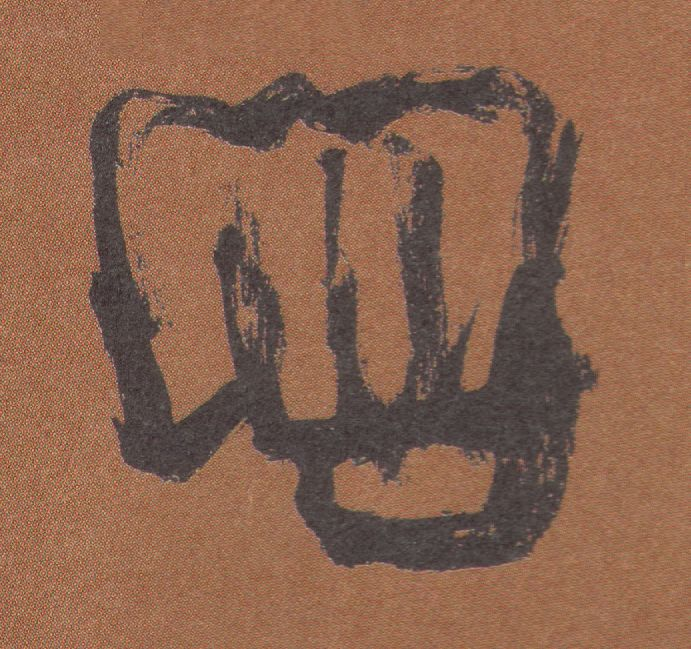
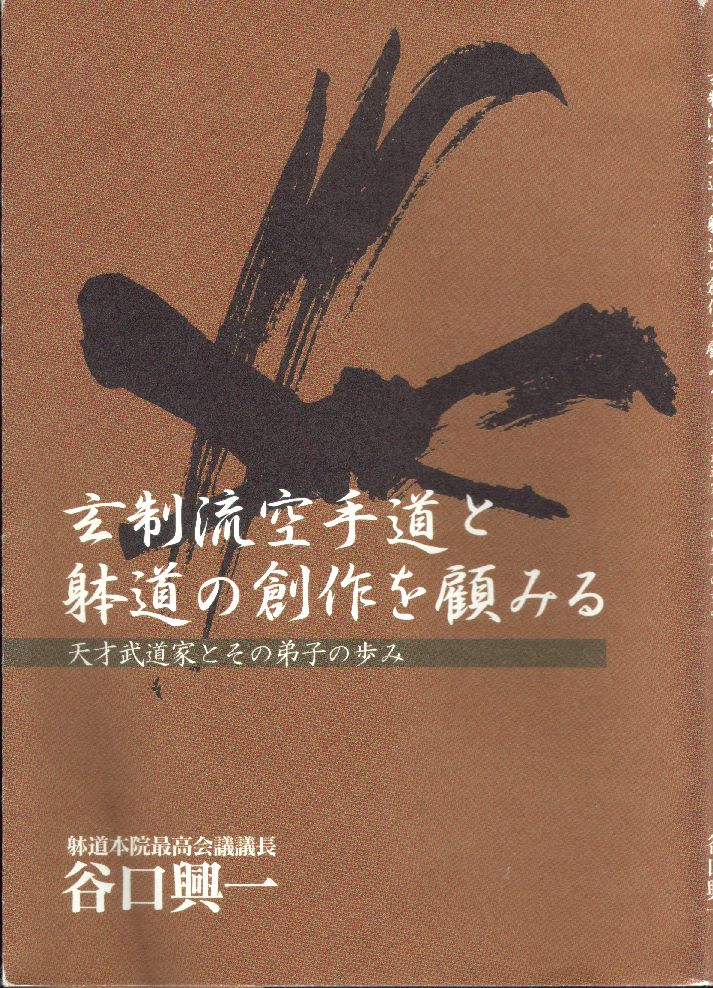
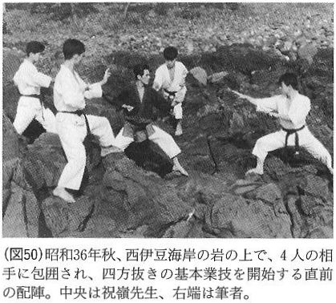
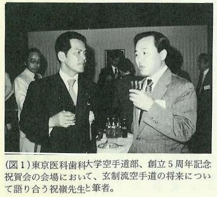
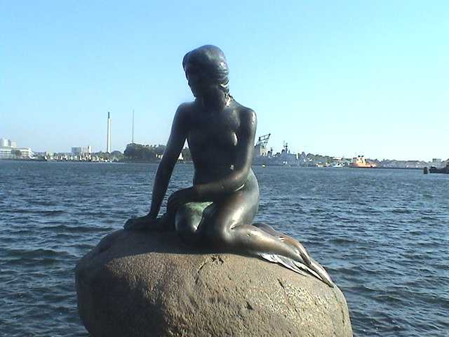
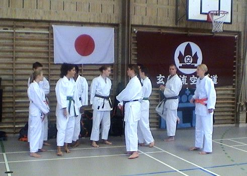
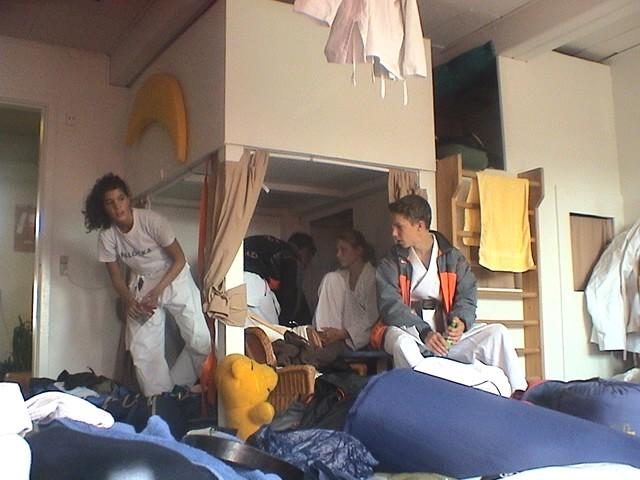

- NEW BOOK GENSEIRYU and TAIDO!
Datum gepost: 02 februari 2006
 There
is a new book about Genseiryu (and Taido)! Just recently, the Japanese
author sensei Taniguchi has published his book about the history of Genseiryu
and Taido. The cover of the book, which is written in Japanese, can
be seen on the picture on the right. The title of the book translates to
"Looking back at the creation of Genseiryu Karatedo and Taido".
Sensei Taniguchi is one of the first students of sensei Shukumine, the founder
of both Genseiryu and Taido. Sensei Taniguchi supported to
make one of Genseiryu's proudable original kata, "Sansai". They worked
together at sensei Shukumine's house in Tokyo, in the late 1950s. Since
he is one of the oldest students, he is also the strongest witness about
Genseiryu Karatedo and Taido history. The book is very interesting
for everybody who is interested in the history of Genseiryu and Taido.
It contains many interesting old pictures and it mentions old Genseiryu
students of sensei Shukumine. We made a small selection of pictures from
the book to give a first inside for everybody who is interested in the true
history of Genseiryu Karatedo and Taido. We hope by giving the book cover
and some selected pictures from the book we offered all Genseiryu practitioners
a favour. If you are interested about Genseiryu Karatedo and/or this
book you can send us a message. In the future we would like to reveal also
some parts of the book in English. To do this we need permission from the
author and the board of the Genseiryu Karatedo organization. We will
try to keep you informed!
There
is a new book about Genseiryu (and Taido)! Just recently, the Japanese
author sensei Taniguchi has published his book about the history of Genseiryu
and Taido. The cover of the book, which is written in Japanese, can
be seen on the picture on the right. The title of the book translates to
"Looking back at the creation of Genseiryu Karatedo and Taido".
Sensei Taniguchi is one of the first students of sensei Shukumine, the founder
of both Genseiryu and Taido. Sensei Taniguchi supported to
make one of Genseiryu's proudable original kata, "Sansai". They worked
together at sensei Shukumine's house in Tokyo, in the late 1950s. Since
he is one of the oldest students, he is also the strongest witness about
Genseiryu Karatedo and Taido history. The book is very interesting
for everybody who is interested in the history of Genseiryu and Taido.
It contains many interesting old pictures and it mentions old Genseiryu
students of sensei Shukumine. We made a small selection of pictures from
the book to give a first inside for everybody who is interested in the true
history of Genseiryu Karatedo and Taido. We hope by giving the book cover
and some selected pictures from the book we offered all Genseiryu practitioners
a favour. If you are interested about Genseiryu Karatedo and/or this
book you can send us a message. In the future we would like to reveal also
some parts of the book in English. To do this we need permission from the
author and the board of the Genseiryu Karatedo organization. We will
try to keep you informed!
OSU!
David Roovers
Genseiryu Karatedo Netherlands
KLM Karateclub / Genseikan Karatedo

- Geen nieuwe sporten op Olympisch Spelen
Datum gepost: 21 augustus 2005
Het is inmiddels alweer oud nieuws, maar voor degenen die het nog niet weten: er komen géén nieuwe sporten op de Olympische Spelen in Londen 2012. Het Internationaal Olympisch Comité heeft tijdens een bijeenkomst in Singapore op 7 juli 2005 besloten om geen nieuwe sporten aan het programma toe te voegen.Aanvankelijk zouden twee vervangende sporten worden aangewezen voor de eerder weggevallen sporten honk- en softbal. Daarvoor bestonden vijf kandiaten: karate, squash, inline-skating, rugby en golf. Bij nader inzien besloot de IOC-sessie hiervan af te zien. Karate en squash werden wel nog ter stemming voorgelegd, nadat de andere drie sporten eerder werden geschrapt, maar in tweede instantie vallen ook deze sporten af omdat ze tijdens de vergadering niet de noodzakelijke meerderheid kregen voor een Olympische status. Nu honk- en softbal zijn weggevallen zonder vervangende sporten, resteren voor de Olympische Spelen in Londen 2012 nog 26 sporten. Verder lezen: http://www.karatebond.nl/Olympisch.html
- Karate op shortlist van Olympisch Spelen!
Datum gepost: 24 september 2004
De Karate-do Bond Nederland heeft van de World Karate Federation (WKF) het bericht ontvangen dat KARATE op de shortlist van 5 sporten staat die mogelijk in aanmerking komen om aan het Olympisch Programma toegevoegd te worden. Verdere besluitvorming hieromtrent zal in juli 2005 plaatsvinden gedurende de IOC-sessie in Singapore.

{kind=link}

| Just before starting shihō Nuki
at Nishi Izu beach in 1961. In the center is sensei Shukumine. On the right is the author of the new book, sensei Taniguchi. |
 |
| At the Tokyo Ikashika University Karate
Club's 5 years anniversary reception. Sensei Shukumine and author sensei Taniguchi are discussing about the future of Genseiryu Karatedo. |
 |
{kind=link}
{kind=link}
European Genseiryu Summer Camp 2005 in Denmark
{kind=link}

Datum gepost: 27 september 2005, laatste update: 1 oktober 2005
{kind=link}

From 23 till 25 September, sensei Jackie Moos, the President of Genseiryu Denmark, organized the European Genseiryu Summercamp 2005, held in Kastrup (near Copenhagen), Denmark. Some people of Dutch Genseiryu (KLM Karateclub Amstelveen and Genseikan Anna Paulowna) also joined the camp at the Amager Genseiryu Honbu dojo, under the leadership of sensei Konno and sensei David Roovers.Training started on Friday afternoon, in the gymnasium nearby the dojo and the school where everybody slept. The Saturday morning started with jogging, at 6 o'clock. After that breakfast and at 9:00 two trainings. Then after lunch, a very interesting training where we were taught (amongst others) how to keep an opponent away from you, while lying on the floor. After that, a training by sensei Jackie for only brown and black belt, where he taught us many interesting sweeping techniques. Then a round of kata (Ten-i no, Chi-i no, Jin-i no and Sansai). In the evening, sensei Jackie's wife Grace had prepared a wonderful Asian dinner, which (almost) everybody enjoyed. The rest of the evening there was a lot of drinking and singing until late in the night...
The drinking from last night made most people almost uncapable of getting up that early. The Dutch delegation managed to pull themselves together and be outside in the dark, chilly morning...With still some alcohol in the blood and legs made of rubber, we started to run through the streets of Kastrup. After breakfast, there was again a training. This time, Shihō Yaburi was trained as a request from, I think somebody in the Danish delegation. Sensei Konno taught the shihō step-by-step, and after a while, most of us were able to walk this not so easy shihō on his/her own. After lunch it was time to say goodbye to everybody. This camp was fun and all with all it was a very interesting weekend!
{kind=link}

Van 23 t/m 25 september hield sensei Jackie Moos, President van Genseiryu in Denemarken, het Europeese Genseiryu Zomerkamp 2005, in Kastrup (bij Kopenhagen), Denemarken. Sommige mensen van Genseiryu Nederland (KLM Karateclub Amstelveen en Genseikan Anna Paulowna) namen ook deel aan dit kamp in de Amager Genseiryu Honbu dojo, onder leiding van sensei Konno en sensei David Roovers.De eerste training startte op vrijdagmiddag, in de gymzaal vlakbij de dojo en de school waar iedereen sliep. Op zaterdagochtend om 6 uur werd de dag begonnen met een stuk joggen. Daarna was het ontbijt en om 9 uur waren er twee trainingen. Na de lunch was er een interessante training waarbij we o.a. leerden hoe je een tegenstander van je lijf kan houden, terwijl je op de grond ligt. Daarna was er een training door sensei Jackie voor alleen de bruine en zwarte banden. Hier werden zeer interessante beenveeg-technieken geoefend. Daarna werden een aantal kata gelopen (Ten-i no, Chi-i no, Jin-i no and Sansai). 's Avonds had Grace, de vrouw van sensei Jackie, een heerlijk Aziatisch diner klaargemaakt, waar (bijna) iedereen van genoten heeft. De rest van de avond werd er veel gedronken en gezongen, tot laat in de nacht...
Het zuipfeestje van de afgelopen avond had de meesten de das omgedaan en vroeg opstaan was bijna onmogelijk. De Nederlandse delegatie lukte het wel om om 6 uur in de duistere, koele ochtend klaar te staan... Met nog wat alcohol in het bloed en benen van rubber, startten we onze loop door de straten van Kastrup. Na het ontbijt was het alweer tijd voor de laatste training. Dit keer vroeg sensei Konno of er nog verzoekjes waren en iemand uit de Deense delegatie stelde de Shihō Yaburi voor. Sensei Konno leerde deze Shihō stap-voor-stap aan de mensen die het nog niet kenden en na een tijdje waren de meesten in staat om deze niet al te makkelijke Shihō te volgen. Na de lunch was het tijd voor afscheid van iedereen. Dit kamp was leuk en al-met-al was het een zeer interessant weekend!